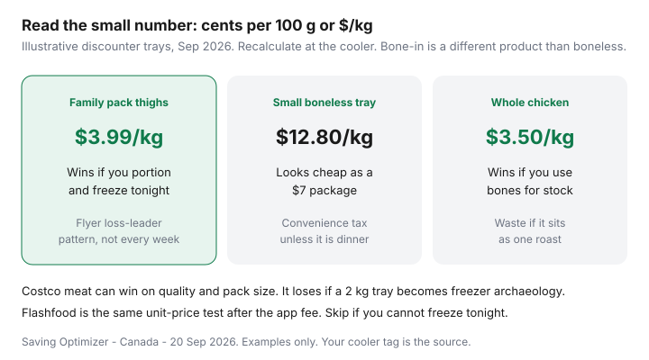

Food & Groceries · Canada
Canadian meat-buying strategy: flyer timing, unit prices, and freezer rules
Meat is the swing item on a Canadian grocery receipt. Statistics Canada’s 2023 household spending still had meat around $1,544 a year on an average store bill — the line that moves when you wait for Thursday or panic-buy a $12.80/kg convenience tray. Unplanned protein is how “we shop at No Frills” households still blow the month.
This is the buying system: unit prices, flyer patterns, whole-bird math, Flashfood protocol, Costco quality versus waste, and rotation so you do not throw out boredom chicken. Freezer discipline is the sibling page — stock a freezer without chaos. Cost per gram of protein is in cheap high-protein meals.
Disclosure: Costco memberships and vacuum sealers are offer types. Saving Optimizer may earn a commission if we later add those links. We do not currently claim Costco, grocer, or Flashfood partnerships. You can run this system with freezer bags and Flipp.
Key takeaways
- Read $/kg or ¢/100 g. The big dollar on the tray is advertising.
- Clip Thursday loss leaders you already cook. Do not invent a new cuisine at the cooler.
- Whole birds and family packs win only with a same-night portion plan.
- Flashfood is a planned substitute, not a treasure hunt. Freeze tonight.
- Costco meat is a quality and pack-size tool. It is a waste tool if you cannot store it.
Reading meat tray unit prices correctly
The shelf tag’s small number is the product. Compare the same cut, same bone story, same trim. Ground extra-lean is not regular ground. Chicken breast is not thighs. A “value pack” that is just more expensive meat in a bigger tray is a vibe.

September 2026 city snapshots in our protein guide often showed sale chicken breast near $8.80–$9.90/kg and regular breast much higher. Those are examples. Your cooler is the source.
Weekly flyer protein patterns by banner
No Frills, FreshCo, Food Basics, Maxi, Super C, and Superstore rotate cheap thighs, drums, pork, and the occasional whole bird. Premium banners advertise nicer lighting. Clip on flyer day and write dinners first — sales → meals → list. Price match when the banner still matches: Flipp system, FreshCo 1¢ beat.
| Banner type | Meat job |
|---|---|
| No Frills / FreshCo / Food Basics / Maxi | Default loss-leader hunt. One store per week. |
| Superstore / full-service Loblaw or Sobeys | Specific cut or match. Not the staple shop. |
| Costco | Predictable large packs you will portion tonight. |
| Flashfood zone | Substitute protein on a trip you were taking. |
Whole chicken and family-pack economics
A whole bird at $3.50/kg can beat pieces if you roast, pick the meat, and simmer stock. It loses if it occupies the fridge as guilt. Family-pack thighs at $3.99/kg are the weeknight workhorse — if they become four labelled bags the night you buy them. Health Canada: fridge days for raw poultry are short; freeze what you will not cook in a couple of days.
Do not buy three family packs because the limit is four. The 4-unit match cap is a till rule, not a dare. Freezer capacity is the real cap.
Flashfood meat protocol
- Only open the app after dinners exist and freezer space exists.
- Pickup on the Loblaw trip, not as a standalone winter drive.
- Check smell and seal. Fee (community reports: 8% capped ~$2.99 as of Jan 2026) comes off the “savings.”
- Portion, label, freeze. Ground meat is dinner-or-ice, not a three-day plan.
- Put the bags on the next menu. Surplus that becomes waste is worse than shelf price. Full Flashfood guide.
Costco meat when quality extends shelf life
Kirkland packs are often consistent. That quality is wasted if a 2 kg tray sits opened for a week. Costco belongs in a cart split: warehouse for packs you will freeze immediately, discounter for this week’s flyer cut. Membership break-even is a different article. Vacuum sealers help frequent warehouse shoppers; they are optional — see the freezer guide.
Quality vs waste: a slightly higher per-kilo Costco pack you fully eat beats a 40% flyer discount you throw out. Track one month of meat receipts minus the bin.
Rotating proteins to avoid boredom waste
Chicken five ways is how people “get tired of healthy food” and order pizza. Rotate eggs, lentils, tofu, yogurt, canned fish, pork, and the flyer bird. Plant-forward weeks are still high-protein weeks. Ethnic grocers often win on tofu and yogurt tubs.
Leftover night is a protein strategy: no new meat. That is calendar, not mood — waste systems and meal prep.
If the month’s meat line did not drop, you bought stories at the cooler. Unit price, a named dinner, and a labelled bag are the whole Canadian system.
Sources & date stamps
- Statistics Canada, Survey of Household Spending 2023 (Daily 21 May 2025 / Plus 24 Jul 2025): meat about $1,544 on an average store bill.
- Health Canada safe storage: raw meat fridge windows; freezer −18 °C quality ranges; no counter thaw.
- Public Sep 2026 discounter snapshots for egg/chicken examples used in our protein guide — verify locally.
- Flashfood fee community notes and Loblaw partnership context as in the Flashfood guide.
- Love Food Hate Waste Canada: plan from what you have, including the freezer.
Frequently asked questions
How do I read a Canadian meat tray unit price?
Look at the small shelf number - cents per 100 g or dollars per kilogram - not the package total. A $7 small tray can lose to a $14 family pack on a per-kilo basis. Bone-in and boneless are different products; do not compare them as if they were the same meat.
When are flyer meat prices actually cheap?
When the unit price is clearly below your last month's memory on that cut and you can freeze extras tonight. Thursday/Friday circulars at No Frills, FreshCo, Food Basics, Maxi, and Super C rotate loss-leader proteins. A 'was/now' sticker on a tiny tray is often theatre.
Is a whole chicken a better deal than pieces?
Often on a per-kilo basis, if you will roast it and use the bones for stock. It is a worse deal if it sits as one ambitious Sunday that never happens. Pieces win for weeknights if that is what you actually cook.
Should I buy meat at Costco or wait for the discounter flyer?
Costco often wins on consistent quality and pack size for households that portion the same night. Discounters win on true loss leaders. Split the jobs: warehouse for predictable frozen or large packs you can store; flyer for this week's named dinners. See the Costco vs No Frills cart split.
How does Flashfood fit a meat strategy?
As a substitution for a protein you already planned, picked up on the same Loblaw trip, frozen the same night. It is not a treasure hunt. Factor the app fee and skip if the freezer is already full of unlabelled bags.